The 60-second version
Five ideas that explain most of what the sea does here. Each one opens its chapter.
-
A wave is energy on the move, not water.
Under a swell the water goes round in loops and ends up almost where it started. In shallow water the loops flatten into a slide back and forth, which the app calls Surge.
Chapter 1What a wave is → -
Direction matters more than height.
The headlands decide how much swell gets into the bay. An easterly gets about two-thirds of its height to the bay mouth; a south-easterly from around 150° gets about a quarter.
Chapter 3How swell gets into the bay → -
Wind needs open water to make chop.
Chop grows with the wind’s speed and with how much sea it has crossed. A north-easter crosses about 6 km of open water before the bay; from the south-east the run is only 50 to 120 m.
Chapter 5Wind and chop → -
The sea is never flat.
The Moon and Sun raise and lower it twice a day, about 50 minutes later each day. Across the ocean, warm water and currents hold some parts higher than others, and satellites measure the difference from space.
Chapter 8Tides → Chapter 9The ocean isn’t flat → -
Cold, green water comes up from below.
Days of north-easterly wind along the coast push the warm surface water out to sea, and colder water rises from deeper down to take its place. It brings nutrients, and the plankton that feed on them can turn the water green.
Chapter 10Cold water, green water →
Contents load with the page.
How swell reaches the bay
What a wave is, how it travels, and why the headlands decide how much of it reaches the South Steyne corner.
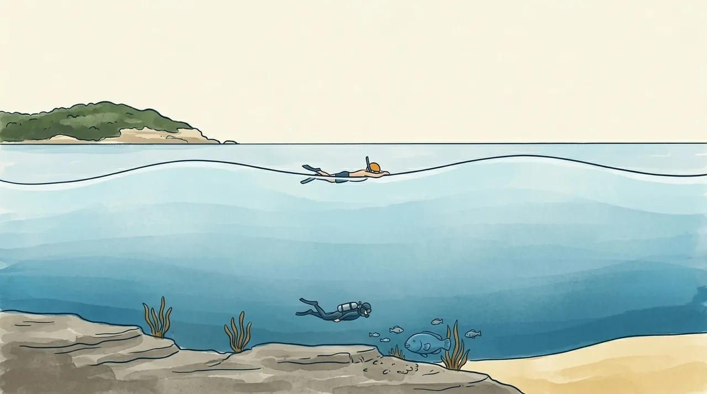
IllustrationWhen a swell lifts you, why do you end up back where you started?
A wave is energy passing through, not water arriving
When a swell rolls in, the water itself hardly travels. Each bit of water goes round in a loop and comes back to nearly where it started. What moves across the ocean is the energy, handed from one loop to the next.
You know this already. Float out past the ramp on a swell day and you rise, drift forward, sink and drift back. That loop is the wave going through you.
In deep water the loops are circles, and they shrink fast as you go down. Half a wavelength below the surface they're about 4% of their size at the top, which is why divers can sit still under a big swell.
In shallow water the seabed gets in the way. The circles are squashed into flat ovals, and near the bottom the water just slides back and forth. That sideways slosh is what the app calls Surge. Switch the animation to At the ramp to see it.
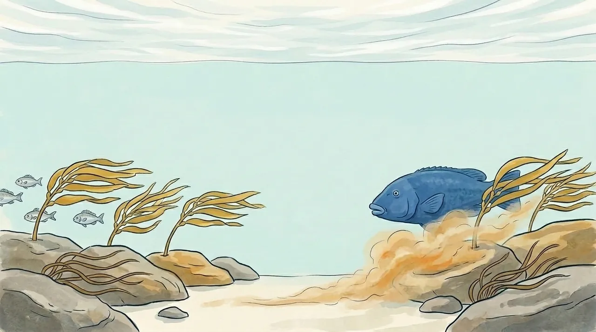
IllustrationHeight matters. Period matters more than you'd think.
A forecast gives three numbers for a swell: height, period (seconds between crests) and direction. Most people read the height and skip the rest. The figure below lets you set the first two and see what each one changes.
Period sets the wavelength, and wavelength decides how deep the wave reaches. A wave starts to feel the seabed once the water is shallower than about half its wavelength. For a 10-second swell that's around 78 m down, so it's scraping the bottom across the whole shelf off Manly, which sits at 20 to 40 m.
A long-period swell feels the bottom sooner, bends more, and carries more punch for its height. It's the one that finds its way into places you'd expect to be sheltered.
Chapter 1 in three lines
- A swell carries energy across the ocean. The water itself mostly goes round in loops and ends up nearly where it started.
- In shallow water the seabed squashes the loops flat, and near the bottom the water slides back and forth. That slide is what the app calls Surge.
- A 2 m swell carries four times the energy of a 1 m swell, and a longer period means a longer wave that feels the seabed from deeper down.
Further reading
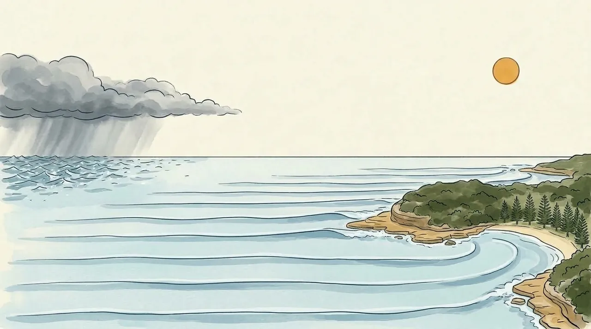
IllustrationWhy do the bigger waves come in groups, with flat spells in between?
Swell and sea are two different things
Swell was made by a storm somewhere else, often days ago and hundreds of kilometres away. By the time it gets here it has sorted itself into long, even lines.
Sea (or wind-wave) is made by the wind that's blowing now, nearby. It's short, steep and jumbled, and it stops growing soon after the wind drops. In the water you get both at once, added together.
The forecast usually gives both, and the app scores them differently. Swell mostly drives Entry and Surge. The local wind's sea is most of Chop, the bumpy surface you feel mid-swim.
Sets: why waves come in groups
Swell doesn't arrive evenly. A run of bigger waves comes through, the set, then smaller ones for a while, the lull. A real swell is many waves of slightly different period travelling together. Where their crests line up they add, and where the crests of one meet the troughs of another they cancel.
The simplest picture is just two swells, of 10 s and 11 s. They slip out of step and back in every 110 s (the two periods multiplied, divided by the gap between them). So a set comes through about every 11 waves.
In deep water a set, and the energy it carries, moves at only half the speed of its crests. So each crest appears at the back of a set, grows as it runs through, and fades out at the front. Follow the orange dot: a set is a pattern moving through the swell, not a fixed bunch of waves.
A groundswell from a distant storm has been sorted on its way here, because longer waves travel faster and arrive first. The waves reaching you at any one time have very similar periods, so its sets are distinct, with long lulls between them. A local wind sea mixes many periods at once, so its groups are short and messy. Neither keeps time like the two swells above: real sets vary in size, and so do the gaps between them.
Further reading
- VIZ — Dive conditions simulator
- C. Sillig — Waves course (PDF, and geophysical fluid dynamics)
- Southard — Water motions due to waves
- Bosboom & Stive — Coastal Dynamics: refraction
- ScienceDirect — Shoaling wave
- WeatherSTEM — Waves lesson
- Surfertoday — What is wave diffraction?
- Data: NSW Nearshore Wave Tool hindcast, node 103218; Open-Meteo marine hindcast; WillyWeather via the app's forecast history.
Why can a two-metre south-easterly barely reach the corner, while a one-metre easterly runs straight in?
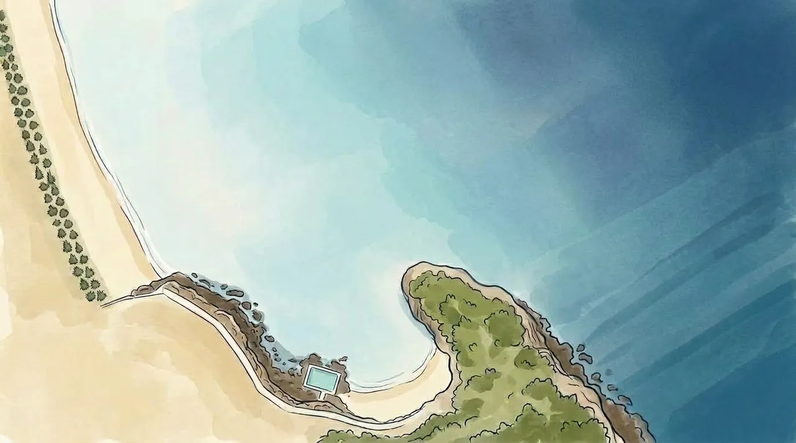
IllustrationFeeling the bottom: waves slow, bunch up and stand taller
Once a wave feels the seabed, the bottom drags on it and it slows down. In shallow water the speed depends mainly on depth:
The back of the wave is still in deeper water and moving faster, so it catches up with the front. The energy gets packed into less space and the wave stands taller. This is shoaling. It's why a swell you barely noticed from the promenade can rear up over the last few metres before the sand.
Shoaling also changes what the water around you does. The loops flatten into that back-and-forth slide: compare the two close-ups above. So the same swell feels more like a push and pull the shallower you are.
Bending round: refraction and diffraction
Refraction
A wave line arriving at an angle hits shallow water at one end first. That end slows down while the other end keeps going, so the whole line swings round to face the shore. It's the same thing that makes a straw look bent in a glass of water.
Cabbage Tree Bay opens to the north-east, with Shelly headland guarding its south-east side. A south-easterly has to swing round that headland to get in. The data shows it. A swell forecast from about 157° (SSE) turns up at the bay mouth from around 124°. It has bent about 30 degrees, and lost most of its height doing it.
Diffraction
When a wave passes the end of a headland, some of its energy spills sideways into the sheltered water behind it. That's diffraction. The shadow behind a headland is never completely flat: it gets a weaker, spread-out copy of the swell outside.
Both effects are stronger for longer waves: switch either animation to 13 s to see it. At this bay mouth, though, two years of data barely show it. A south-easterly arrives from about 124° whatever its period, because the headland sets the angle. And most of the extra height a longer swell seems to bring is the Nearshore model counting more of the same waves as swell rather than sea.
Further reading
- VIZ — Dive conditions simulator
- C. Sillig — Waves course (PDF, and geophysical fluid dynamics)
- Southard — Water motions due to waves
- Bosboom & Stive — Coastal Dynamics: refraction
- ScienceDirect — Shoaling wave
- WeatherSTEM — Waves lesson
- Surfertoday — What is wave diffraction?
- Data: NSW Nearshore Wave Tool hindcast, node 103218; Open-Meteo marine hindcast; WillyWeather via the app's forecast history.
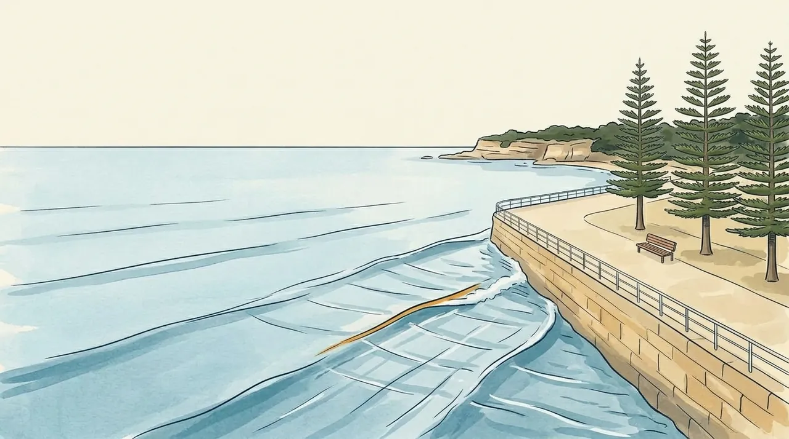
IllustrationWhy does the water slosh harder by the point, and off the sea wall at high tide?
The point: where the swell gathers
A short way along from the South Steyne corner towards Shelly, a rocky point sticks out into the swell. Its rock shelf carries on underwater, so the water in front of the point is shallower than the water either side.
The swell slows down over the shelf. Either side of it, the same crests are still in deeper water and moving faster, so they swing in towards the point. It's refraction again, working from both sides at once, so the swell’s energy converges on the point. The point gets more swell, and a stronger back-and-forth, than the bay beside it, even on mornings when the bay is quiet.
A longer-period swell feels the shelf from further out, so it starts turning, and gathering, sooner: switch the animation to 14 s to see it. It also carries more power for its height. That's why the app's Surge card looks at the point as well as the bay, and names the point when it's the reason Surge isn't Steady.
Bouncing back: reflection
A wave that hits something steep and solid, like a sea wall or a rock shelf, doesn't break. It bounces back out to sea. The reflected wave runs into the next one coming in, and the two add together.
Close to the wall, the water mostly goes up and down. About a quarter of a wavelength out, often around 10 m, the back-and-forth motion of the two waves stacks up, and the slosh can be close to double what the incoming swell alone would give.
This depends on the tide. At high tide the waves reach the wall and reflect. At low tide they spend their energy on the sand and rocks first. Switch the animation to Low tide to see the difference. The app's Surge score includes a wall-reflection term that grows at high tide for this reason.
Further reading
- VIZ — Dive conditions simulator
- C. Sillig — Waves course (PDF, and geophysical fluid dynamics)
- Southard — Water motions due to waves
- Bosboom & Stive — Coastal Dynamics: refraction
- ScienceDirect — Shoaling wave
- WeatherSTEM — Waves lesson
- Surfertoday — What is wave diffraction?
- Data: NSW Nearshore Wave Tool hindcast, node 103218; Open-Meteo marine hindcast; WillyWeather via the app's forecast history.
What the wind does to the water
Why the wind’s direction matters as much as its speed.
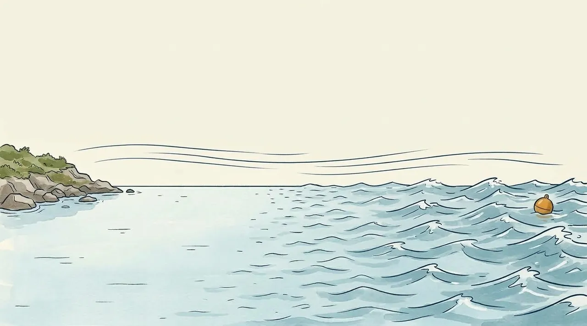
IllustrationWhy is it rough today when the forecast said the swell was small?
Wind needs a runway
Wind makes waves by pushing on the water, and it needs a stretch of open water to do it, the way a plane needs a runway. Right where the wind leaves the land, the water is almost flat. The further it blows across open water, the more the ripples grow, into taller, longer waves. That stretch of water is called the fetch.
So the direction of the wind matters as much as its strength, because it decides how long the runway is. Pick a direction and watch the ripples grow on their way to you.
Roughly, the chop grows with the wind speed times the square root of the runway. Double the wind and the chop doubles. To do the same with the runway alone, it has to be four times longer.
- North-east: the wind comes across about 5 km of open sea, and the chop has room to grow.
- East: the runway goes back across the bay to Shelly headland, about 800 m.
- South-east round to south: the wind has just crossed Fairy Bower or Marine Parade, so it gets only about 50 to 120 m of water.
- West: offshore at South Steyne. It comes off the beach with only about 120 m of water to work on, and the buildings behind the beach take some of its strength first. It also blows against incoming waves and flattens them.
At the bay mouth, two years of data show it clearly. When a north-easter blows 30 to 45 km/h, the model holds a median of about 1.1 m of wind sea there. A westerly of the same strength leaves about 0.2 m.
This is only the chop the wind makes here. Swell is made by storms far away, and it arrives whatever the local wind is doing (section 03).
Look at where the wind comes from before how hard it blows. The direction sets the runway, and the runway sets the chop.
What moves the water and the sand
The slow creep under every wave, the current along the beach, and where the sand goes after a storm.
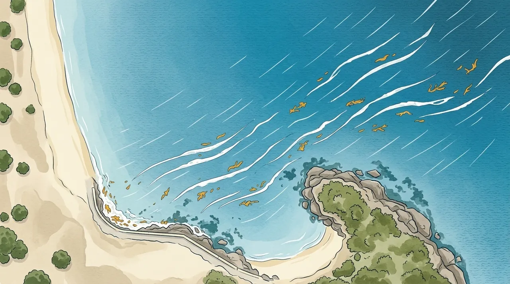
IllustrationWhy do you come out further along the beach than where you went in?
Carried along: when the water itself travels
In the first section, each bit of water goes round a loop and comes back to nearly where it started. This is the nearly. Under a crest the water moves forward a little faster than it moves back under the trough. So each loop ends slightly ahead of where it began, and the water creeps along the way the waves are travelling. This is Stokes drift.
For a swell in deep water it is tiny: a 1 m, 10-second swell moves the top of the water about 6 mm a second, under 40 cm a minute. It grows with steeper waves and in shallow water. Double the height and the creep is four times faster. A half-metre, 10-second wave in 2 m of water moves the top about 4 cm a second, six times faster than that metre-high swell in deep water.
Wind does more. It drags the top layer of water downwind at roughly 3% of its own speed, so a 20 km/h wind moves the surface about 0.6 km/h, 10 m a minute. That is more than 20 times the creep of the 1 m, 10-second swell. Switch the animation to Swell + 20 km/h wind to compare the two.
Waves that break at an angle to a beach push a current along it, inside the surf zone. Switch the animation to Along a beach to see it from above. Out at sea, a 1 m, 10-second swell comes in 30° off straight-in. It breaks in about 1.7 m of water and drives a current of about 0.5 m/s along the beach, 30 m a minute. Water pushed along a beach has to get back out to sea, and where it funnels seaward it forms a rip current.
Further reading
- VIZ — Dive conditions simulator
- C. Sillig — Waves course (PDF, and geophysical fluid dynamics)
- Southard — Water motions due to waves
- Bosboom & Stive — Coastal Dynamics: refraction
- ScienceDirect — Shoaling wave
- WeatherSTEM — Waves lesson
- Surfertoday — What is wave diffraction?
- Data: NSW Nearshore Wave Tool hindcast, node 103218; Open-Meteo marine hindcast; WillyWeather via the app's forecast history.
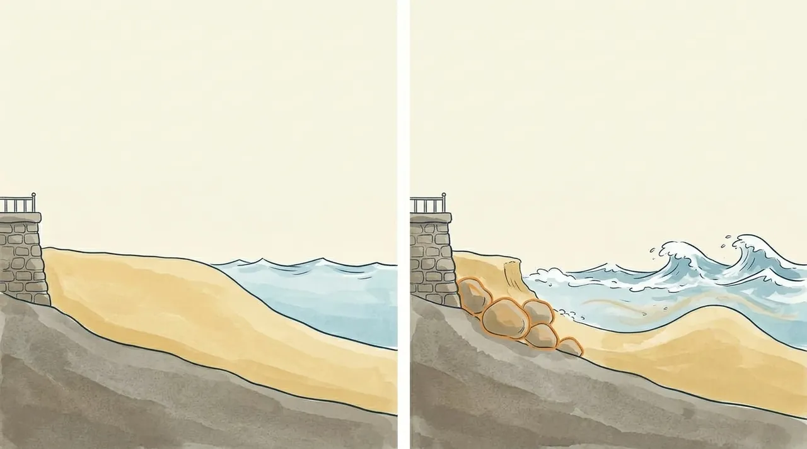
IllustrationAfter a big storm strips South Steyne down to the rocks, where did the sand actually go, and how does it get back?
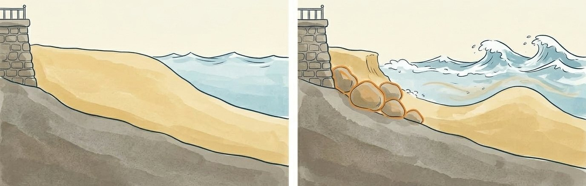
Where does the sand go?
After a big swell, the beach at South Steyne can be lower and narrower, with rock showing where there was sand. Usually, weeks or months later, most of it is back. Most of it doesn’t go far: storm waves move it a short way out to sea, and calmer swell can bring it back.
In a storm the waves are short, steep and close together. Each one throws water up the beach, and that water has to get back out to sea. It goes back along the bottom, as a current called the undertow, and drags sand with it. A short way out the undertow slows and drops the sand, which piles up into a long underwater hill: a sandbar.
Once the bar has grown, the big waves break out on it instead of on the beach, and less of their energy reaches the sand. The beach gives up some sand to build its own shock absorber. It shields the sand, not swimmers: as storm bars move further out, rip currents get bigger.
The best measurements come from just up the coast. A survey of the June 2016 storm stopped just north of Manly, but at Narrabeen it found the sand again offshore, 2.5 to 9 m down: the same amount the beach had lost. Storm bars there have sat a couple of hundred metres out. Off Manly, big seas build a second, outer sandbar.
It’s the waves that move the sand. A high tide lets them reach further up the beach, right to the wall, so a storm on a big high tide does more. The June 2016 storm came on a run of big winter high tides.
A beach with sand dunes behind it can draw on them in a storm: the dunes give up sand to the beach. South Steyne has a sea wall and promenade behind it instead, so there’s no spare sand behind the beach, and the level in front of the wall drops. Rock has been placed along the foot of much of Manly’s sea wall, and when the sand drops far enough, rock can show. We found no record (October 2026) of which rock shows at the South Steyne end: the wall’s, the corner’s natural sandstone, or both.
Some guides say waves bouncing off a sea wall scour the sand away. That’s argued over: a major review found the bounce may matter little, and we found no measurement of it at Manly (October 2026).
After the storm, long, low swell carries the sand back. Under each crest, the water near the bottom gives a short, strong shove towards the beach. Under the trough it slides back out, more slowly. So the sand goes in more than it comes back: the bar creeps in a little with every wave and joins the beach, and the waves build the top of the beach back up. It’s a cousin of the drift that makes floating things creep along with the waves.
Lower down the beach this takes weeks to months. At Narrabeen, in ten years of daily camera pictures studied in 2017, the shoreline came back about 20 cm a day on average, and 3 to 4 times faster once the bar had joined the beach. Steeper waves slow it down. A really big storm takes longer: after June 2016, Narrabeen took about a year to largely recover.
None of this is guaranteed. Another storm can set it back. At Narrabeen, researchers found that in the normally sheltered south corner, after a storm from an unusual direction like June 2016, the everyday waves there are too small to bring the sand straight back. South Steyne is a sheltered corner too, though this hasn’t been measured there.
Round the corner, Fairy Bower’s little beach inside Cabbage Tree Bay comes and goes: a survey of NSW beaches describes it as “not always present”.
Manly’s own record comes from satellites: a rough reading, made for this page, of the public CoastSat pictures from 1987 to 1 January 2026. Each picture is good only to 10 to 15 m. One picture can’t show a change smaller than that, but averaging hundreds of them can. In the June 2016 storm, waves badly damaged the Marine Parade walkway between South Steyne and Shelly. In the first clear pictures after the storm, in July, Manly’s shoreline was up to about 20 m further back than usual, and back near usual by mid-August.
Most of the sand isn’t gone. A storm moves it out to a bar a short way offshore, and long, low swell usually walks it back in, over weeks to months, unless the next storm gets there first.
The beach also swings: end to end, and over the years
Manly Beach is boxed in by headlands, so little of its sand leaves. Most of it moves out and back, and some moves along the beach, end to end. On beaches like this on the NSW coast, swell from the south nudges sand towards the north end, and swell from the east or north-east nudges it back south. At Manly the beach swings like a gate on a hinge near South Steyne: the north end moves several metres, the South Steyne end hardly at all.
The satellite pictures show the swing almost every year. In 35 of 39 years, the north end was narrower in autumn than in spring, compared with South Steyne. The swing is several metres on average, less than a bus length, and most of it is the north end moving. On this measure the South Steyne end barely moves, too little to separate from the satellites’ noise. In the stormy, wet start to 2022, too, the north end and the middle of the beach narrowed far more than South Steyne.
Over the years, the whole beach moves in and out with the Pacific. La Niña years bring more easterly swell and more storms; El Niño years, smaller swell from further south. In 38 years of satellite pictures of the Pacific’s coasts, about three in four stretches of south-east Australian beach grew wider in El Niño years, and about half eroded in La Niña years. Manly does the same: on average the whole beach sits several metres further out in El Niño months than in La Niña months. It moves in and out more than it swings end to end.
That’s a nudge to the odds, not a forecast. One of Manly’s narrowest spells in the satellite record, in mid-2009, came just as an El Niño was starting, and one big storm (an east coast low) can strip a beach in any year. The record ends on 1 January 2026, before the 2026 El Niño.
Over the whole record, 1987 to 2025, Manly shows no long-term loss of sand that the satellites can measure, though people have helped at times: North Steyne was topped up with sand after the June 2007 storm. And satellites aren’t the only eyes on it. In May 2017, South Steyne got the world’s first CoastSnap stand: a phone cradle that lets anyone photograph the beach from the same spot, for researchers at UNSW.
Most of Manly’s sand stays between the headlands. It moves out and back with storms and swell, end to end with the seasons, and in and out with the Pacific over the years.
Further reading
- Harley et al. 2017 — Extreme coastal erosion enhanced by anomalous extratropical storm wave direction (Scientific Reports 7: 6033): the June 2016 storm survey, sand found 2.5–9 m down at Narrabeen, big winter tides, stranded storm sand in sheltered corners (Collaroy, Narrabeen’s south end), the survey’s southern limit just north of Manly.
- Harley et al. 2022 — Single extreme storm sequence can offset decades of shoreline retreat (Communications Earth & Environment 3: 112): storm bars about 200 m out at Narrabeen; the storm largely undone about a year later.
- Mortlock, Goodwin, McAneney & Roche 2017 — The June 2016 Australian East Coast Low (Water 9: 121): storm sand stays in the embayment.
- Phillips, Harley, Turner, Splinter & Cox 2017 — Shoreline recovery on wave-dominated sandy coastlines (Marine Geology 385): 82 storms at Narrabeen, about 0.2 m a day, 3–4 times faster once the bar attaches, slower under steeper waves.
- Kennedy, McInnes & Ierodiaconou — Understanding coastal erosion on beaches (NESP Earth Systems and Climate Change Hub), pp. 7–8: the bar as the beach’s brake; rips grow as bars move out.
- Leon 2025 — Beloved beaches were washed offshore by Cyclone Alfred, but most of this sand will return (The Conversation, 11 Mar 2025): months for the beach, years for dunes, and recovery is not guaranteed.
- Kraus & McDougal 1996 — The effects of seawalls on the beach: an updated literature review (Journal of Coastal Research 12(3)): reflection may not be a significant cause of beach change; walls can block the back beach from rebuilding.
- Rhelm for Northern Beaches Council — Open Coast and Lagoons Coastal Management Program, Scoping Study (2025/26), pp. 16, 36–37, 47: Manly backed by sea walls and a promenade; rock protection along the toe of much of the wall; little sand leaves these headland-bound beaches; Fairy Bower’s beach “not always present” (p. 16, citing Short 2007).
- Surf Life Saving Australia, Beachsafe — Queenscliff, North Steyne, Manly (A. D. Short’s beach description): a second bar off Manly in big seas.
- Wikipedia — Shelly Beach (Manly), citing the Daily Telegraph, 6 Jun 2016: damage to the Marine Parade walkway.
- Harley, Turner, Short & Ranasinghe 2011 — A reevaluation of coastal embayment rotation (JGR 116, F04033): southerly swell moves sand north, easterly swell moves it south; the seasonal swing at Narrabeen.
- Harley, Turner, Short & Ranasinghe 2010 — Interannual variability and controls of the Sydney wave climate (International Journal of Climatology 30): La Niña storms longer, stronger and more easterly.
- Vos, Harley, Turner et al. 2023 — Pacific shoreline erosion and accretion patterns controlled by ENSO (Nature Geoscience 16): 75% of south-east Australian stretches accrete in El Niño, 48% erode in La Niña.
- CoastSat (K. Vos, UNSW Water Research Laboratory), Manly site aus0210, tide-corrected Landsat shorelines 1987 to 1 Jan 2026, 10–15 m per picture. The Manly figures here (June 2016, early 2022, the yearly swing, El Niño and La Niña averages, mid-2009, no long-term loss) are our own rough reading of the public data, recomputed twice from the raw files; not a published or peer-reviewed study. Each is an average over many pictures.
- Manly Observer, 18 Apr 2022 — Queensie beach, are we ever gonna see your face again?: the storms, rain and lagoon floods of the 2021–22 La Niña summer at the north end.
- Photographic documentation of a 1-in-30-year storm at Manly, 8 Jun 2007 (AODN): North Steyne topped up with sand after the storm.
- UNSW — Capturing change with CoastSnap (Jul 2024) and NSW Government — CoastSnap: the first CoastSnap cradle, at Manly (South Steyne), May 2017.
Why the sea goes up and down
The Moon and Sun’s twice-daily pull, and the slower hills and hollows across the whole ocean.
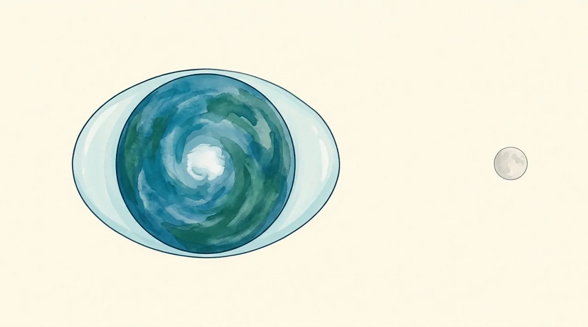
Illustration · not to scaleIf the Moon doesn’t lift the sea, why does the water at the South Steyne ramp rise and fall twice a day, about 50 minutes later each day?
Why there are two high tides a day
The Moon pulls on the whole Earth, but not evenly. Its pull weakens with distance, so the side of the Earth facing the Moon is pulled a little more than the middle, and the middle a little more than the far side.
The Earth and the Moon are falling around each other (that's what orbiting means), so only the differences count. And the differences stretch the Earth along the line to the Moon, like dough pulled harder at the front than at the back.
The stretch is tiny: about a ten-millionth of the Earth's own gravity. It could never lift the sea straight up. But sideways nothing holds the water back, so that small nudge, working across thousands of kilometres, slides the ocean into two humps: one facing the Moon and one on the far side.
![Painted illustration: the Earth seen from above a pole, wrapped in a layer of ocean that is stretched into two equal humps, one pointing at the Moon on the right and one on the far side. The layer is thinnest at the top and bottom. Not to scale.]()
The Earth turns under the two humps once a day, so Manly passes through both: two high tides and two low tides. The spin doesn't make the humps. It just carries us through them.
Meanwhile the Moon moves on along its orbit, the same way the Earth turns, so each day Manly has to turn about 50 minutes more to catch it up: the tide comes, on average, about 50 minutes later each day.
The Sun stretches the ocean too. It pulls on the Earth about 179 times harder than the Moon does, yet stretches it less than half as much (46%), because it is about 390 times further away, and the stretch fades with distance much faster than the pull does.
At new moon and full moon the Sun and Moon line up with the Earth. Their stretches add (a stretch works both ways, so it doesn't matter which side the Sun is on): higher highs and lower lows. These are spring tides, nothing to do with the season. At half moon the Sun stretches at right angles to the Moon and partly cancels it: neap tides, with lower highs and higher lows. Spring tides come about every two weeks.
The two humps are where the story starts, not what the real ocean does. Continents are in the way, and the ocean is too shallow for a tide wave to race round the world with the Moon: it would need about 1,600 km/h, but in water 4 km deep a wave travels about 700 km/h. So each ocean sloshes in its own giant pattern, and that pattern, not where the Moon is, sets when high tide reaches each beach.
At Sydney, high tide comes about 8½ hours after the Moon is highest in the sky, or lowest, under our feet. (From here the Moon is never straight overhead.)
The Moon doesn't lift the sea. It stretches it, and Manly turns through the stretch twice a day.
What the tide does at Manly
There's no tide gauge in Cabbage Tree Bay. The longest record nearby is at Fort Denison, the little fort on an island in Sydney Harbour, where sea level has been measured since 1857. The highest water measured there, 2.40 m in May 1974, was a big tide with a storm on top.
The official 2023–24 tide tables list The Spit and Pittwater as NIL: no difference from Fort Denison's times within the table's quarter-hour steps. So Manly's tides come at about Fort Denison's times. The heights should be close too, but we could find no published check.
At the South Steyne ramp, and round the bay past Fairy Bower to Shelly Beach, the tide changes the depth over the sand, rocks and reef: by about a metre on a typical day, and by up to about 2 m on the biggest. A wave breaks when its height reaches roughly three-quarters of the depth, so at low tide the same swell breaks further out, over shallows and rocks that high tide covers.
Along Marine Parade, high tide lets the waves reach the sandstone sea wall, and they bounce back. At low tide they spend their energy on the sand and rocks first: see Bouncing back.
Our own analysis of 19 years of hourly Fort Denison readings (2003 to 2021) splits the tide into regular parts. The biggest, the Moon's twice-a-day part, swings the sea about half a metre either side of average. Next come a once-a-day part and the Sun's twice-a-day part, each about a quarter to a third the size of the Moon's, then smaller ones.
Almost every day has two highs, and the once-a-day parts make them different heights: typically by about 30 cm, and by up to about 70 cm, because the Moon and Sun spend part of the time north or south of the equator.
By the theory in Part 1, the Sun should add almost half as much as the Moon; here it adds only about a quarter, because the ocean sloshes differently to the Sun's 12-hour beat than to the Moon's 12 hours 25 minutes. So spring tides rise and fall about 1.25 m and neaps about 0.75 m: less than twice as much. And mainly because the Sun's part nudges each high earlier or later, the day-to-day delay is usually 35 to 70 minutes, not exactly 50.
The curve adds up 14 regular parts from our analysis, each at its 2003–2021 average strength, on that period's average sea level (in 2021 to 2025 the yearly average sat about 5 to 10 cm higher). It's an example, not a forecast: for real dates, use a tide table.
The tide table's 0 m is not the sea floor, nor the average sea level, which sits about a metre above it: it's about the lowest the predicted tide gets in ordinary weather. Weather moves the real sea too, higher or lower than the table says (more in The ocean isn’t flat).
The year's biggest tides, which people call king tides, come when a spring tide lines up with the Moon at its closest, and are worked out years ahead. Sydney's biggest highs come on winter evenings and summer mornings (which season wins changes from year to year), its lowest lows on summer afternoons and before dawn in winter and early spring.
Filling and emptying Cabbage Tree Bay moves water only millimetres a second. We could find no measurements of currents in the bay, and the ones swimmers notice are mostly driven by waves and wind.
The tide doesn't change the swell. It changes how deep the water is where the swell arrives.
- Butikov — A dynamical picture of the oceanic tides (Am. J. Phys. 70, 2002)
- Matsuda, Isaka & Boffin — Confusion around the tidal force and the centrifugal force (2015)
- Strassler — What really causes our twice-daily ocean tides (2023)
- Bowditch — American Practical Navigator, ch. 35: Tides and tidal currents (2019)
- NOAA — Tides tutorial: the lunar day
- Segar — Introduction to Ocean Sciences, ch. 10: Tides
- Bureau of Meteorology — Explainer: king tides (2018, updated 2021)
- Transport for NSW — NSW Tides 2023–2024 (Bureau of Meteorology predictions; time differences along the coast)
- Port Authority of NSW — History of tides in Sydney Harbour
- Bruce Thom — King tides and extreme events (Fort Denison records)
- NOAA — Tides tutorial: other effects (weather)
- Bosboom & Stive — Coastal Dynamics: wave breaking
- Wikipedia — Cabbage Tree Bay Aquatic Reserve (its area, for the bay-filling estimate)
- Data: University of Hawaii Sea Level Center, Fort Denison (station 333), hourly sea level, from Sydney Ports / Port Authority of NSW. The tide parts, ranges, day-to-day delays and the example fortnight are our own analysis of 2003–2021.
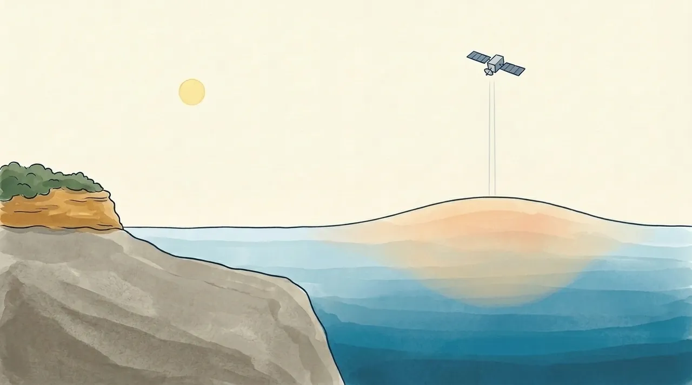
Illustration · height stretched thousands of timesCan a satellite in space see a 25 cm hill on the sea, and why can’t it see Cabbage Tree Bay?
The sea has hills and dips
From the Marine Parade wall on a still morning, the sea looks level. It isn’t. Out past Shelly headland it rises into gentle hills and sinks into gentle dips, tens of centimetres high and a hundred kilometres or more across. A ship crossing one couldn’t measure the tilt, but satellites can find them.
Three things build these hills. Warm water takes up a little more room than cold, so where it goes hundreds of metres deep, the sea above stands higher. A thin warm layer isn’t enough. Big currents hold the sea higher on one side, because the Earth spins. And under a deep low, less air presses on the sea, so it bulges up.
Pick one below and watch a satellite pass over it. It reads how much higher or lower the sea is, except near the coast, where it can’t take a reading at all.
The sea off Sydney is full of eddies: slow-turning hills and dips that break away from the East Australian Current. Warm eddies are hills and cold eddies are dips, typically 100 to 300 km across, and the big ones often last over a year. In 2008 a cold one off NSW was 300 km across, nearly 1 m low in the middle, and turned once every 10 days.
Why doesn’t a hill of water slump flat? Because the Earth spins. Water starting downhill is turned sideways, so it runs around the hill instead of off it. In our half of the world it keeps the higher sea on its left, looking the way it flows: anticlockwise round a hill, clockwise round a dip. That works for hills 50 km and wider, not in Cabbage Tree Bay, where tide, wind and waves push the water about (see Carried along).
From about Forster to Bass Strait, scientists call the sea ‘Eddy Avenue’, after a Sydney street where they once waited for the bus. It has more eddies than the rest of the Tasman Sea, and they spin about three times faster than the world’s average.
The East Australian Current runs south from the Coral Sea, up to about 100 km wide and 500 m deep, with the higher sea on its left: out to sea. Much of it turns away from the coast just north of Port Macquarie, so off Manly its eddies do most of the shaping.
Straight out from Manly, the sea usually stands higher 150 to 200 km out than near the coast: about 30 cm higher on the long-term average. That’s our own reading of Europe’s Copernicus satellite maps, not a published figure. Some weeks an eddy steepens the step; some weeks it flattens it, or even turns it round.
Air pressure works on the whole sea at once: about 1 cm higher for every hectopascal (hPa, same as a millibar) the barometer falls below average, about 1013 hPa. On its own that seldom adds more than 30 cm, but it usually comes with strong onshore wind, which heaps water against the coast too.
How big is it?
The tide is bigger: it raises and lowers Sydney’s sea by about 1 m twice a day, and about 2 m at the biggest tides (our calculation from the 2023–24 NSW tide tables). But the hills and dips are hundreds of kilometres wide and can last for months.
The sea isn’t level. Warm water, the spinning Earth and the weather hold it in gentle hills and dips, far too wide to see from the beach.
Why the hills matter at Manly
Warm and cold water. A hill carries its water with it. The current and its warm eddies bring warm, salty water south, and ocean scientists note that eddies can bring warm water to swimmers at Bondi. A cold eddy nearby can steer the current away and keep the coast colder. Which one sits off Sydney changes week to week, and we found no study of Manly itself. And warm on top doesn’t always mean a hill: some cold eddies wear a thin lid of warm water.
Wind joins in too. In December 2025, off northern NSW, a newer satellite called SWOT, which reads closer to the coast, saw the sea sitting low along the shore. At the same time, north-easterly winds, a strong current and a nearby cold eddy together brought cold water up from the bottom (more in Cold water, green water).
Storms on big tides. Low pressure and onshore wind together lift the whole sea: a storm surge. It isn’t one big wave, but a higher sea with the storm’s waves on top. In the June 2016 East Coast Low, a surge of up to 34 cm along the NSW coast landed on a big winter ‘king tide’. About 20 cm of Sydney’s peak that day was surge, measured at Fort Denison. The storm damaged the coast along Manly Beach towards Fairy Bower.
On an open beach there’s more. Breaking waves push the water further up the sand, and each wave runs on beyond that. In a storm on an exposed beach, those two are the biggest part of how high the water reaches. The harbour gauge, sheltered from the swell, never sees them, and sea-level maps leave them out (see Where the sand goes).
El Niño. Across the Pacific, the trade winds heap the sea about 46 cm higher near Indonesia than near Peru, and in El Niño it sloshes back east. Sydney’s harbour level also rises and falls over the years with the strength of the East Australian Current. We found no published figure for how big that swing is at Sydney (more on the El Niño page).
Slowly, the whole sea is rising. Warming water swells and melting ice adds more. Worldwide the sea is about 10 cm higher than in 1993 (NASA, data to 2024): about 3 cm a decade on average, and faster now. At Fort Denison, the harbour’s average level rose about 12 cm from the late 1800s to the late 2010s (published 2019). From 1993 to 2024 it rose about 3.8 mm a year, give or take 0.4 mm (our calculation from the gauge’s yearly averages).
The hills bring warmer or colder water past the coast. Storms lift the whole sea, and their waves ride in on top. Underneath it all, the sea is slowly rising.
How do you measure a hill you can’t see?
With a ruler on the shore. A tide gauge at Fort Denison, the little fort on an island in Sydney Harbour, has logged the water level since the 1800s, reliably every hour since 1914. A gauge is a ruler fixed to the land: if the land sinks, the sea seems to rise. So GPS stations sit beside gauges, and the harbour numbers above are ‘relative’ sea level.
With radar from space. A satellite sends a radar pulse down to the sea and times the echo. Where the sea is raised, the trip is a little shorter. Knowing exactly where the satellite is, scientists turn that into the sea’s height from the centre of the Earth, whatever the land does. A relay of six satellites has done this since 1992. Each one is checked against the one before, and against instruments moored in Bass Strait.
There’s a catch. Gravity isn’t quite the same everywhere, so even a perfectly still sea has bumps of its own, far bigger than the hills in the picture. Straight out from Manly, this ‘level’ sea drops about 6 m over the first 150 km or so (our own check with a gravity model). That’s the opposite way to the current’s step. Water lying on it feels no push, and it makes up about 99% of the average sea surface’s shape, so scientists take it out first. The readings in the picture are typical sizes of what’s left.
Satellites have blind spots. The usual ones can’t read the sea reliably within about 25 to 50 km of the coast, so they never see Cabbage Tree Bay. That’s the grey, hatched ‘no reading’ water in the picture. Daily sea-level maps are stitched together from several days of passes, so they blur anything smaller than about 100 km, and some run a few days behind. ‘Adjusted’ maps also take out the tide and the air-pressure effect. So a sea-level map shows the hills offshore, not the water at the beach.
To see this week’s hills and dips off Sydney, open the OceanCurrent map for southern NSW, from IMOS, Australia’s ocean-observing network. Its contour lines are sea level. Check the dates printed on it: the sea level is usually a few days older than the sea temperature it’s drawn over.
Nobody can see the sea’s hills from the beach. A gauge in the harbour has watched the water since the 1800s, and satellites find the hills from space once gravity’s own bumps are taken out.
Further reading
- IMOS OceanCurrent — What’s shown: gravity’s share of the sea surface (about 99%) and why it is taken out; the satellite’s range is shorter where the sea is raised; the spin rule (higher water on the left in the Southern Hemisphere, for features 50 km and up lasting days); about 10 cm per 10 hPa; what ‘adjusted’ maps remove; sea-level maps leave out wave setup in shallow water near the shore.
- IMOS OceanCurrent — Glossary: anticlockwise eddies have raised sea level in the centre; satellite heights are measured from the centre of the Earth.
- IMOS OceanCurrent news: G. Pilo, 28 Apr 2016 (warm-core eddies, about 100 km across, can bring warm water to swimmers at Bondi); D. Griffin, 20 Dec 2024 (cold-core eddy off Sydney: low sea level, clockwise); G. Pilo, 3 Oct 2025 (maps built from about 10 days of passes, features larger than 100 km; SWOT has measured sea level near the coast); D. Griffin & G. Pilo, 17 Dec 2025 (northern NSW cold-water event: north-easterlies, a strong EAC and a cold eddy; SWOT image of low sea level at the coast).
- Everett, Baird, Oke & Suthers 2012 — An avenue of eddies (Geophysical Research Letters 39, L16608): Eddy Avenue, 32–39°S (about Forster to Bass Strait); 23% and 16% more cyclonic and anticyclonic eddies than the wider Tasman Sea; average amplitudes 23 and 24 cm; rotation about 45–50 cm/s against 15–16 cm/s globally (about three times faster).
- NASA Sensing Our Planet 2013 — Pedestrians of Eddy Avenue: the name comes from a Sydney street where the researchers waited for the bus; warm eddies turn anticlockwise and cold ones clockwise here; some cold eddies are capped with warm water.
- Ridgway & Hill 2009 — The East Australian Current (Marine Climate Change Report Card): the current separates from the coast around 31°S (just north of Port Macquarie); eddies 200–300 km across, often lasting more than a year.
- NASA Earth Observatory — East Australian Current: up to 100 km wide and 500 m deep.
- CSIRO via ScienceDaily, 26 Mar 2008 — Giant ocean eddy shadows Sydney: a cold eddy 300 km across, nearly 1 m low at its centre, one turn every 10 days.
- NASA JPL, 13 Sep 2002 — From satellites to sea: warm eddies stand higher than the water around them, cool eddies lower.
- Copernicus Marine Service — global gridded sea level (SEALEVEL_GLO_PHY_L4_NRT_008_046): the long-term step of about 30 cm between the coast and 150–200 km out along 33.8°S (Manly’s latitude) is our own reading of this product (its long-term mean, ADT minus SLA, on the 5 and 6 Oct 2026 maps), not a published figure. Twelve monthly snapshots (Nov 2025 to Oct 2026) show the day-to-day step varying with eddies, reversed on three of them. Generated using E.U. Copernicus Marine Service Information.
- GeographicLib GeoidEval (EGM2008 gravity model): our own check that gravity’s ‘level’ surface falls from about 22.5 m at Manly (33.8°S 151.3°E) to about 16.1 m at 153°E, about 160 km out.
- Bureau of Meteorology — About tide predictions: barometric pressure (about 0.1 m per 10 hPa, seldom more than 0.3 m), the effect of wind, storm surges; Explainer: king tides.
- Louis, Couriel et al. 2016 — NSW East Coast Low event, 3–7 June 2016 (Bureau of Meteorology and Manly Hydraulics Laboratory): surge up to 0.34 m on a winter king tide; about 0.20 m of Sydney’s peak; damage along Manly Beach towards Fairy Bower.
- NSW tide tables (Bureau of Meteorology predictions for Fort Denison). The tide range on this page is our own calculation from the 2023–24 tables.
- Watson & Lord 2008 — Fort Denison Sea Level Rise Vulnerability Study (NSW DECC): the tide register from 1866, reliable records from 1914; two highs and two lows a day; tide gauges measure the sea against the land; on an exposed open coast, wave setup and wave runup are the biggest part of how high storm water reaches at the shoreline, while the harbour round Fort Denison gets far less wave action than the open coast.
- PSMSL — Sydney, Fort Denison 2 (station 196): acoustic gauge since 1996; the yearly means behind our own fits (3.75 ± 0.41 mm a year for 1993–2024; relative sea level).
- Science Feedback, 28 Oct 2019: about 12 cm at Sydney since the end of the 19th century, about 0.8 mm a year through the 20th (T. Frederikse; rates from You et al. 2009).
- Holbrook et al. 2011 (Deep-Sea Research II 58): Fort Denison sea level varies over years to decades with the strength of the East Australian Current.
- NOAA — Effects of ENSO in the Pacific: about 46 cm higher near Indonesia than Peru; the water moves back east when the trade winds weaken in El Niño.
- NASA JPL, 13 Mar 2025 — Unexpected amount of sea level rise in 2024 (about 10 cm since 1993, data to 2024, rate more than doubled); Bureau of Meteorology — State of the Climate 2024: Oceans (warming water expands; satellites limited to beyond 25–50 km from the coast).
- NASA JPL, 21 Nov 2020 — Sentinel-6 Michael Freilich launch (the satellite chain since 1992); Ocean News — Sentinel-6B launched (17 Nov 2025); Copernicus Marine — Sentinel-6B (flies in formation with Sentinel-6A for cross-checking).
- IMOS — Satellite altimetry calibration and validation: instruments moored in Bass Strait under a satellite’s path, the only Southern Hemisphere site operating since TOPEX/Poseidon in 1992.
- IMOS OceanCurrent — southern NSW, latest map (sea temperature with sea-level contours; each map prints its own dates). Images are © IMOS: see the IMOS terms of use before reproducing them.
Why the water changes
Where sudden cold water comes from, and what turns the bay green.
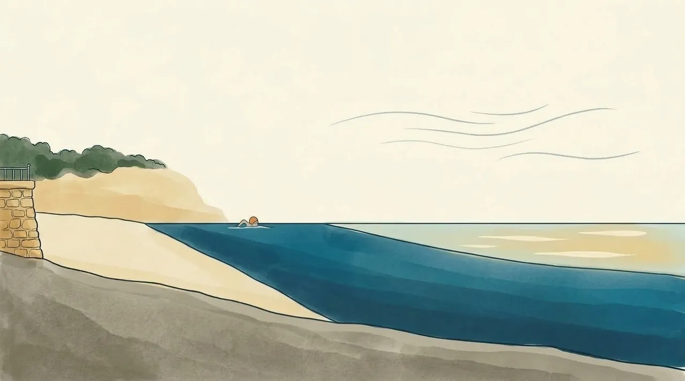
Illustration · not to scaleWhy can a warm north-easter leave South Steyne colder, and then greener, a few days later?
Why a run of north-easters can turn the water cold
After a few days of strong north-easters in summer, the water at South Steyne can turn cold. That seems backwards: the north-easter blows in towards the beach. Instead the warm top layer can move out to sea, and cold water from below comes up to take its place. This is called upwelling.
In summer the sea is layered: a sun-warmed top layer floats on colder, heavier water. The figure is a slice through the sea off South Steyne, looking north, with the beach on the left.
Why out to sea? Because the Earth spins: moving water bends to the side, and in the Southern Hemisphere it bends to the left of where the wind is going. The very surface bends only a little, so it still drifts nearly downwind (see Carried along). Deeper down it bends more, and the warm layer as a whole, tens of metres deep, moves at right angles to the wind.
Our coast runs roughly north-north-east. A north-easter blows towards the south-west, mostly along the coast, and left of that is south-east: out to sea. So the warm layer slides away, and cold water creeps in along the bottom and rises at the beach. The small map in the figure shows it from above.
All this happens out over the open sea floor. Cabbage Tree Bay is far shallower, and we found no measurement of how much of the cold gets inside it.
So what counts is how hard the wind pushes along the coast:
- North to north-east: the strongest push towards cold water.
- South to south-west: the strongest push the other way.
- East, west, south-east, north-west: mostly across the coast, a weak push.
Strength and time matter as much as direction: twice the wind speed gives about four times the push. Satellite winds show strong upwelling winds (about 30 km/h along the coast) off Sydney on only 3 to 5 days a month from late November to March, and most runs last 2 to 4 days. Even then the cold doesn’t always come: instruments on the seabed off Bondi found the water cooled by three-quarters of a degree or more on only about a third of those days.
When it does come, it shows a day or two after the north-easter sets in (off Bondi, two days later was the closest match), and it often ends with a southerly change or when the wind drops.
It can be quick. In December 2010 Sydney’s water dropped from 22 °C to 17 °C between a Wednesday and the Friday, with northerly winds blamed. On 6 December 2024, after a spell of north-easters, sea fog formed off Manly and Dee Why over a band of 17 to 19 °C water that satellite maps had shown along the coast four days earlier.
The cold isn’t a current from Antarctica: it is the sea’s own deeper water from tens of metres down, so it reaches the seabed before the surface.
A warm swirl of the East Australian Current close to the coast can hide the cold, as one did at Sydney in December 2023.
A southerly does the reverse. It blows towards the north, and left of that is west, into the coast. The warm layer piles up against it and is pushed down, and the cold water goes back out. This is downwelling, the more common of the two off Sydney, most of all from May to July. It doesn’t heat the water, though, and a cold southerly can even cool the very top.
Down here the sea turns left of the wind. A strong north-easter that lasts a few days can send the warm top layer out to sea and bring cold water up from below. A southerly does the reverse: it holds the warm top layer against the coast.
Why cold water can turn green a few days later
Water from deep down is cold, and it is also rich in nutrients: food for plankton, the tiny plants that drift in the sea. In the sunlight they multiply and tint the water green: the more of them, the greener it gets and the less you can see. Press Days after a north-easter in the figure above.
It takes days, not hours. Freshly upwelled water can arrive cold and still clear; the green follows once the water settles. In eastern Bass Strait in February 2013, the water was coldest on the 17th and the bloom showed on satellite pictures by the 21st. Elsewhere, a bloom like this builds and fades within about a week; some green can linger. We found no measurement of the lag at Sydney.
The biggest regular green-up off Sydney comes in spring, not summer: in most years a short-lived bloom of diatoms, one common kind of plankton, runs along the NSW coast, with more than 10 times the usual plankton.
Sometimes a pink-red tinge follows. Sea sparkle (Noctiluca) eats other plankton, diatoms above all, so it peaks with or after a diatom bloom; its slicks are often old cells carried down the coast. A state list of blooms records it at Shelly Beach, Fairy Bower and Manly between 2000 and 2008.
Not every red plume follows upwelling: on 1 December 2021 a reddish plume ran from Manly past Shelly Beach and into Cabbage Tree Bay after a fortnight of heavy rain. The species wasn’t confirmed.
Typical patterns, not sure signs:
- Green over a wide area: plankton. After north-easters it often comes with cold water; the spring bloom can come without it.
- Brown, with debris, near drains and lagoon mouths after rain: runoff, which Beachwatch forecasts; the app’s Pollution tile opens that forecast.
- Milky or sandy after a big swell: sand and silt stirred off the bottom. At Terrigal it began once waves passed about 1.5 m at the Sydney wave buoy, and the finest particles stayed up for as long as a week.
- Pink, red or rusty patches: often sea sparkle. Brownish clumps like sawdust, or a slick like oil: often sea sawdust (Trichodesmium), which rides in on the warm, nutrient-poor current. WaterNSW’s algae alerts map lists the current alerts across NSW.
Algae are sometimes mistaken for sewage or oil.
In the app, and El Niño
The Sea tile on the Today tab shows one morning’s reading from the swimmers. If the cold reaches where it is taken, you may notice it lower than the day before. When that reading is out of date, it shows a figure marked satellite instead: a fair guide to the general level, not a measurement in the bay.
A satellite study found El Niño tends to strengthen upwelling along NSW, moderately: a tendency, not a forecast. More on the El Niño page.
Cold first, then green a few days later. Brown after rain and milky after a big swell have other causes.
Further reading
- Kerry C., UNSW Coastal and Regional Oceanography — Shark frenzy empties popular Byron Bay beach (upwelling winds explained), UNSW Science, 12 Dec 2025
- Rossi V. et al. (2014) — Seasonality of sporadic physical processes driving temperature and nutrient high-frequency variability in the coastal ocean off southeast Australia, JGR Oceans 119
- Schaeffer A. & Roughan M. (2017) — Sub-surface intensification of marine heatwaves off southeastern Australia, GRL
- Kerry C. & Roughan M. (2020) — Downstream evolution of the East Australian Current system, JGR Oceans
- Ridgway K. & Hill K. (2009) — The East Australian Current, Marine Climate Change Report Card
- Ekman transport (Wikipedia); NOAA — Ekman spiral; Ocean Motion — Upwelling and downwelling
- Swellnet — Analysis: Cold water and green seas, 3 Jan 2019
- SMH via InvestSMART — Just when you felt it was safe..., 12 Dec 2010
- Weatherzone via Elders Weather — Coastal upwelling shrouds Sydney coast with sea fog, 6 Dec 2024
- Weatherzone — Travelling north to meet the cold waters, 16 Dec 2023
- Brown P.C. (1986) — The development and decline of phytoplankton blooms in the southern Benguela upwelling region, PhD thesis, University of Cape Town
- CSIRO/IMOS OceanCurrent news archive (strong upwelling in eastern Bass Strait, Feb 2013)
- Hallegraeff G.M. & Jeffrey S.W. (1993) — Annually recurrent diatom blooms in spring along the New South Wales coast of Australia
- Dela-Cruz J. et al. (2002) Temporal abundance patterns of the red tide dinoflagellate Noctiluca scintillans along the southeast coast of Australia, MEPS 236; and (2003) Population growth and transport of Noctiluca scintillans in the coastal waters off Sydney, Limnol. Oceanogr. 48
- Ajani P. et al. (2011) — Microalgal blooms in the coastal waters of New South Wales, Australia, Proc. Linn. Soc. NSW 133
- Manly Observer — Sea-ing red: what's that funny coloured plume in the water, 1 Dec 2021
- NASA Earth Observatory — A bloom of nitrogen-fixing bacteria, 1 Sep 2019; Illawarra Mercury, 5 Mar 2019
- NSW Beachwatch — State of the Beaches 2018–19, Sydney and 2022–23, Hunter
- WaterNSW — Algae Alerts NSW map (alerts from the Regional Algal Coordinating Committees; opened 7 Oct 2026)
- Scanes P. (2020) — Understanding turbidity and discolouration in Terrigal Bay, NSW DPIE
- Huang Z. & Wang X.H. (2019) — Mapping the upwelling systems of the Australian south-eastern coast using 14-year MODIS data, Remote Sensing of Environment 227
Try it, look it up
The model behind the app’s swell numbers, a simulator to play with, and the words explained.
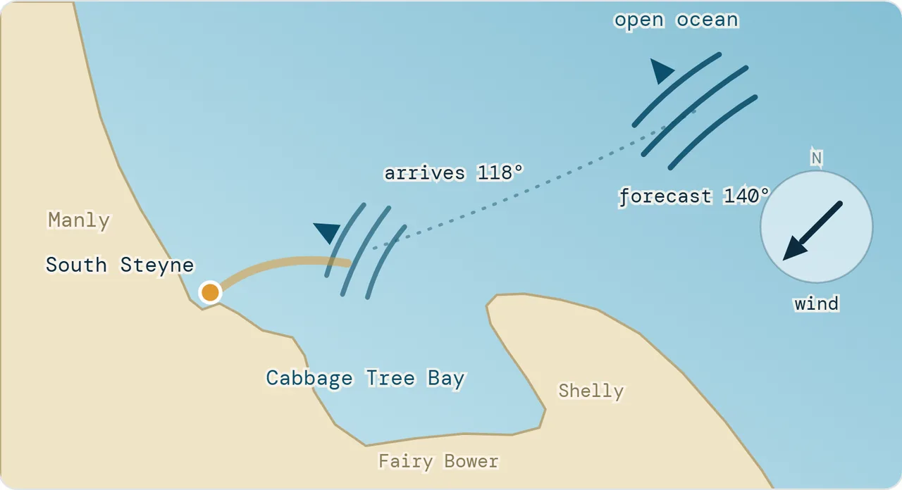
The app’s chartWhy doesn’t the app just use the forecast’s swell height? See it in the simulator.
What two years of data say
We lined up two sets of numbers hour by hour, from December 2023 to December 2025:
- the offshore swell, from an ocean wave model about 8 km east of Manly, which is the kind of number a forecast gives you;
- the swell the NSW Nearshore Wave Tool puts at the mouth of Cabbage Tree Bay (node 103218). That's the model the app runs on.
From 8,142 hours with a real swell running, we worked out how much of the offshore swell reaches the bay mouth, direction by direction, and how the swell's period and size change it.
Show the numbers
| Direction | Measured | 7 s | 10 s | 13 s |
|---|
That last number is the reason the app doesn't use the forecast height directly. WillyWeather's offshore swell is a fair picture of what's happening out at sea. What gets past the headlands is a very different number, and it depends on direction.
The biggest number on the forecast isn't the one that matters. Look at the direction next to it.
Simulator
Set a swell and a wind the way a forecast would show them. The simulator runs them through the bay: the fitted formula takes the swell to the bay mouth, the app's own shelter table takes it round the corner to the South Steyne entry, and wave physics turns it into what the water around you does.
These numbers are modelled, not measured, and this isn't a forecast. The simulator shows how the pieces fit together; it doesn't say whether to swim. For today's call, use the app. The arrival direction depends on the forecast direction only: in theory a longer swell swings a few degrees further towards the beach, but two years of data here show no consistent effect.
Shelter table and chop settings: the copy saved on 29 Sep 2026.
Further reading
- VIZ — Dive conditions simulator
- C. Sillig — Waves course (PDF, and geophysical fluid dynamics)
- Southard — Water motions due to waves
- Bosboom & Stive — Coastal Dynamics: refraction
- ScienceDirect — Shoaling wave
- WeatherSTEM — Waves lesson
- Surfertoday — What is wave diffraction?
- Data: NSW Nearshore Wave Tool hindcast, node 103218; Open-Meteo marine hindcast; WillyWeather via the app's forecast history.
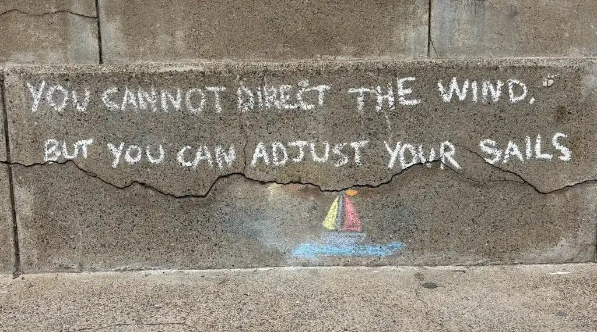
PhotoSwell, set, period, fetch, surge, upwelling: every word these chapters use, each in a sentence.
B
- Bay mouth
-
The opening of Cabbage Tree Bay to the open sea, where the swell enters. The app's wave model reads the swell there, at one fixed point (node 103218).
At Manly Two years of data put about 45% of the offshore swell height at the bay mouth, as a median: an easterly gets about two-thirds in, a south-easterly around 150° about a quarter.
What two years of data say → - Beach swing (beach rotation)
-
Sand moving along a beach from end to end with the swell's direction, so the beach turns like a gate on a hinge.
At Manly At Manly the hinge is near South Steyne: the north end moves several metres, the South Steyne end hardly at all.
The beach also swings →
C
- Chop
-
The bumpy surface you feel mid-swim, made mostly by the local wind's sea. Roughly, it grows with the wind speed times the square root of the fetch.
At Manly The same 30 km/h wind from the south-east makes chop only about a sixth as tall as from the north-east.
Wind and chop →
D
- Diffraction
-
When a wave passes the end of a headland, some of its energy spills sideways into the sheltered water behind it. The shadow behind a headland is never completely flat.
Bending round → - Downwelling
-
The reverse of upwelling. A southerly pushes the warm top layer against the coast and holds it down, and the cold water goes back out.
At Manly It is the more common of the two off Sydney, most of all from May to July. It doesn't heat the water.
Cold water, green water →
E
- East Australian Current (EAC)
-
A current running south from the Coral Sea, up to about 100 km wide and 500 m deep, bringing warm, salty water south.
At Manly Much of it turns away from the coast just north of Port Macquarie, so off Manly its eddies do most of the shaping.
The ocean isn't flat → - Eddy
-
A slow-turning hill or dip in the sea that breaks away from the East Australian Current. Warm eddies are hills, cold eddies are dips, typically 100 to 300 km across.
At Manly Scientists call the sea from about Forster to Bass Strait ‘Eddy Avenue’, after a Sydney street.
The ocean isn't flat → - El Niño and La Niña
-
Swings of the Pacific that change the swell. La Niña years bring more easterly swell and more storms; El Niño years, smaller swell from further south.
At Manly On average the whole of Manly Beach sits several metres further out in El Niño months than in La Niña months.
The beach also swings → - Energy (of a wave)
-
What a swell carries across the ocean. The water itself mostly goes round in loops; the energy is handed from one loop to the next.
At Manly Float out past the ramp on a swell day and you rise, drift forward, sink and drift back. That loop is the wave going through you.
What a wave is →
F
- Fetch
-
The stretch of open water the wind blows across, like a runway. The longer it is, the more the wind can build waves.
At Manly A north-easter gets about 5 km of open sea; a south-easter, having just crossed Fairy Bower or Marine Parade, only about 50 to 120 m.
Wind and chop →
G
- Green water (plankton bloom)
-
Water tinted green by plankton, tiny drifting plants that multiply in sunlight when deep, nutrient-rich water comes up. The greener it is, the less you can see.
At Manly It follows cold water by days, not hours. The biggest regular green-up off Sydney comes in spring.
Why cold water can turn green → - Groundswell
-
Swell from a distant storm, sorted on its way here because longer waves travel faster and arrive first. Its sets are distinct, with long lulls between them.
Sets →
K
- King tide
-
The year's biggest tides, when a spring tide lines up with the Moon at its closest. They are worked out years ahead.
At Manly Sydney's biggest highs come on winter evenings and summer mornings.
What the tide does at Manly →
L
- Longshore current
-
A current along a beach, inside the surf zone, pushed by waves that break at an angle to it.
At Manly A 1 m, 10-second swell coming in 30° off straight-in drives a current of about 0.5 m/s along the beach.
Carried along → - Lull
-
The run of smaller waves between sets.
Sets →
N
- Neap tide
-
At half moon the Sun stretches the sea at right angles to the Moon and partly cancels it: lower highs and higher lows.
At Manly At Fort Denison neaps rise and fall about 0.75 m.
Tides →
P
- Period
-
The seconds between one crest and the next. It sets the wavelength, and how deep a wave reaches.
At Manly A longer period means a wave that feels the seabed from deeper down, and finds its way into places you'd expect to be sheltered.
Height and period → - Point, the
-
The rocky point a short way along from the South Steyne corner towards Shelly. Its rock shelf carries on underwater, so the water in front of it is shallower than either side.
At Manly Swell bends in towards it from both sides, so the point gets more swell, and a stronger back-and-forth, than the bay beside it, even on mornings when the bay is quiet.
The point →
R
- Reflection
-
A wave hitting something steep and solid doesn't break; it bounces back out to sea and adds to the next wave coming in.
At Manly At high tide the swell reaches the sea wall along Marine Parade and bounces back. About a quarter of a wavelength out, often around 10 m, the slosh can be close to double.
Bouncing back → - Refraction
-
A wave line arriving at an angle hits shallow water at one end first. That end slows, so the whole line swings round to face the shore.
At Manly A swell forecast from about 157° (SSE) turns up at the bay mouth from around 124°, having bent round Shelly headland.
Bending round → - Rip current
-
Water pushed along a beach has to get back out to sea, and where it funnels seaward it forms a rip current.
At Manly As storm sandbars move further out, rip currents get bigger.
Carried along →
S
- Sand cliff (scarp)
-
A small step cut into the beach when a storm takes the sand away.
At Manly After a big storm the sand in front of the South Steyne wall drops, and rock at the wall's foot can show.
Where the sand goes → - Sandbar
-
A long underwater hill of sand a short way out, built where the undertow slows and drops the sand it dragged off the beach.
At Manly Once it grows, big waves break on it instead of on the beach. Off Manly, big seas build a second, outer bar.
Where the sand goes → - Satellite altimetry (radar from space)
-
Measuring the sea's height by sending a radar pulse down from a satellite and timing the echo.
At Manly The usual satellites can't read the sea reliably within about 25 to 50 km of the coast, so they never see Cabbage Tree Bay.
How do you measure a hill → - Sea (wind-wave)
-
Waves made by the wind that's blowing now, nearby: short, steep and jumbled. It stops growing soon after the wind drops.
At Manly A local wind sea mixes many periods, so its groups are short and messy.
Swell and sea → - Sea sparkle (Noctiluca)
-
A plankton that eats other plankton and can tint the water pink-red, often with or after a diatom bloom.
At Manly A state list of blooms records it at Shelly Beach, Fairy Bower and Manly between 2000 and 2008.
Why cold water can turn green → - Sea surface height (sea level)
-
How much higher or lower the sea stands. It isn't level: it has gentle hills and dips, tens of centimetres high and a hundred kilometres or more across.
At Manly Straight out from Manly the sea usually stands about 30 cm higher 150 to 200 km out than near the coast (our reading of Copernicus maps).
The ocean isn't flat → - Set
-
A run of bigger waves, where the crests of waves of slightly different periods line up and add.
At Manly Two swells of 10 s and 11 s give a set about every 11 waves.
Sets → - Shoaling
-
Once a wave feels the seabed it slows; the back catches up with the front and the wave stands taller.
At Manly It's why a swell you barely noticed from the promenade can rear up over the last few metres before the sand.
Feeling the bottom → - Spring tide
-
At new moon and full moon the Sun and Moon line up and their stretches add: higher highs and lower lows. Nothing to do with the season.
At Manly At Fort Denison springs rise and fall about 1.25 m. They come about every two weeks.
Tides → - Stokes drift
-
Under a crest the water moves forward a little faster than it moves back under the trough, so each loop ends slightly ahead and the water creeps along with the waves.
At Manly For a 1 m, 10-second swell in deep water it's about 6 mm a second. The wind drags the surface more than 20 times faster.
Carried along → - Storm surge
-
Low pressure and onshore wind together lifting the whole sea. Not one big wave, but a higher sea with the storm's waves on top.
At Manly In the June 2016 East Coast Low, about 20 cm of Sydney's peak was surge, landing on a big winter high tide.
Why the hills matter at Manly → - Surge
-
In shallow water the seabed squashes the wave's loops flat, and near the bottom the water slides back and forth. That slide is what the app calls Surge.
At Manly The app's Surge looks at the point as well as the bay, and adds a sea-wall reflection term that grows at high tide.
What a wave is → - Swell
-
Waves made by a storm somewhere else, often days ago and hundreds of kilometres away, sorted into long, even lines by the time they arrive.
At Manly Swell mostly drives the app's Entry and Surge.
Swell and sea →
T
- Tide
-
The sea rising and falling as the Earth turns through two humps stretched by the Moon (and the Sun): two highs and two lows a day.
At Manly At the South Steyne ramp it changes the depth by about a metre on a typical day, and up to about 2 m on the biggest. It doesn't change the swell, only how deep the water is where it arrives.
What the tide does at Manly →
U
- Undertow
-
Water thrown up the beach by storm waves going back out along the bottom, dragging sand with it.
Where the sand goes → - Upwelling
-
Cold, deep water rising to replace a warm top layer that the wind has moved out to sea.
At Manly After a few days of strong north-easters in summer, the water at South Steyne can turn cold.
Cold water, green water →
W
- Wavelength
-
The distance from one crest to the next, set by the period. A wave starts to feel the seabed where the water is shallower than about half its wavelength.
At Manly A 10-second swell is 156 m crest to crest in open water, so it scrapes the bottom across the whole shelf off Manly.
Height and period → - Wind drift
-
The wind dragging the top layer of water downwind at roughly 3% of its own speed.
At Manly On a north-easterly day loose weed and foam end up against the wall at the South Steyne corner.
A north-easter drags the bay →
No word matches that. Try a shorter search.
This is physics, not a forecast. Nothing here says whether to swim: for today’s conditions, use the app. Sources are listed at the end of each chapter.